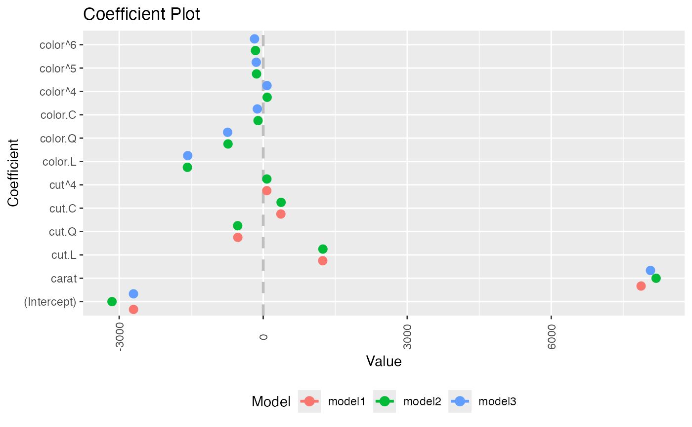
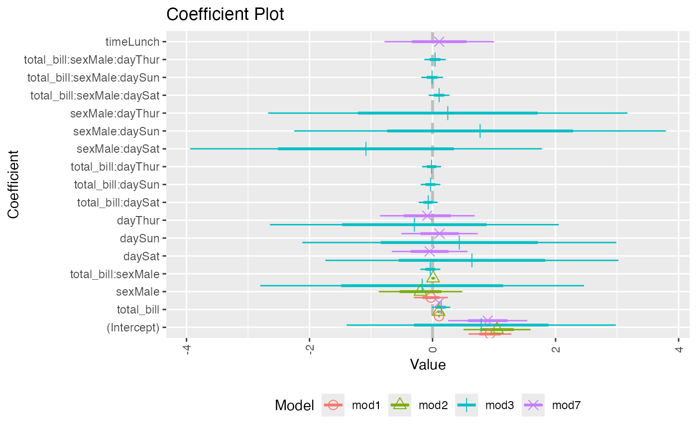
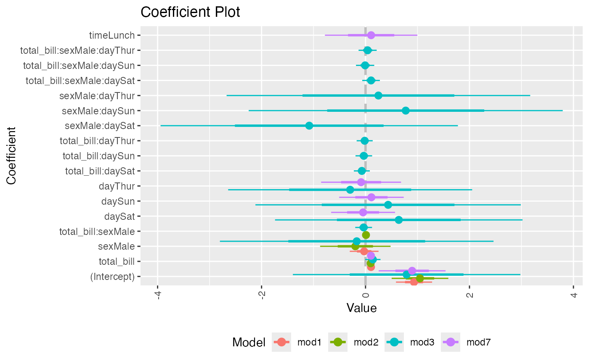
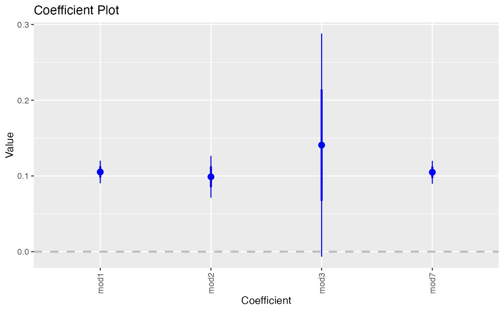
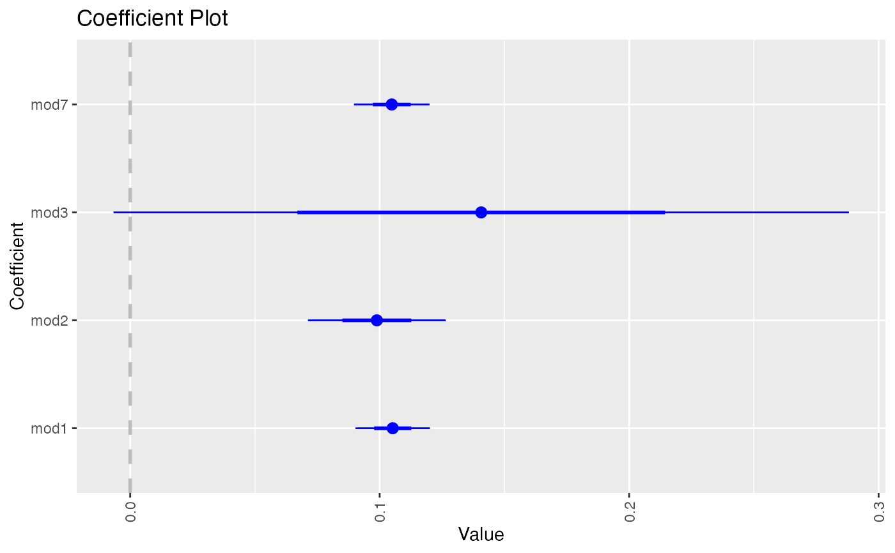
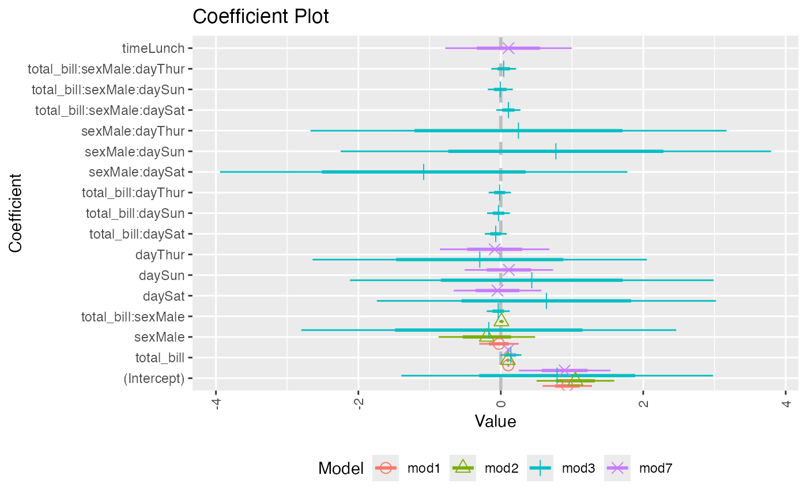
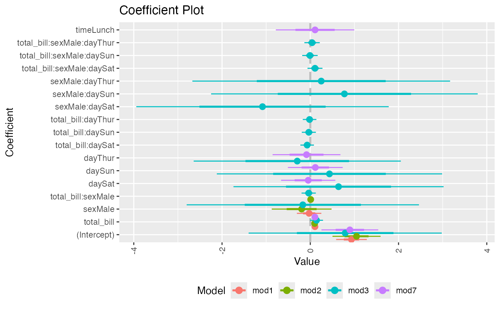
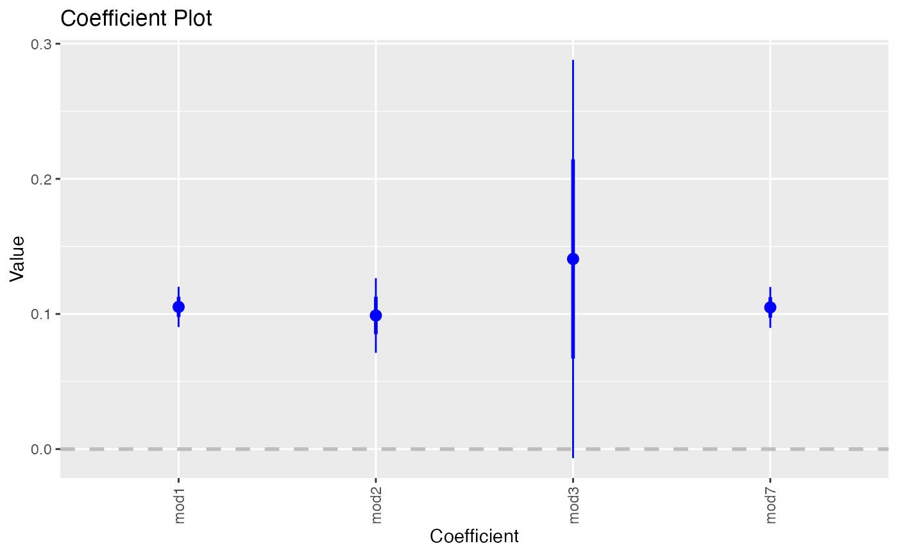
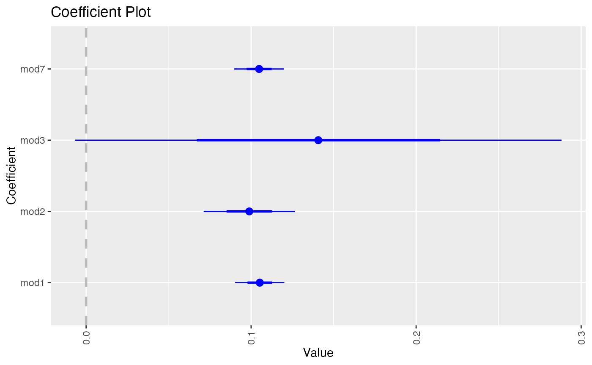

Plot multiple coefplots
multiplot.RdPlot the coefficients from multiple models
Usage
multiplot(
...,
title = "Coefficient Plot",
xlab = "Value",
ylab = "Coefficient",
innerCI = 1,
outerCI = 2,
lwdInner = 1,
lwdOuter = (Sys.info()["sysname"] != "Windows") * 0.5,
pointSize = 3,
dodgeHeight = 1,
color = "blue",
shape = 16,
linetype = 1,
cex = 0.8,
textAngle = 0,
numberAngle = 90,
zeroColor = "grey",
zeroLWD = 1,
zeroType = 2,
single = TRUE,
scales = "fixed",
ncol = length(unique(modelCI$Model)),
sort = c("natural", "normal", "magnitude", "size", "alphabetical"),
decreasing = FALSE,
names = NULL,
numeric = FALSE,
fillColor = "grey",
alpha = 1/2,
horizontal = FALSE,
factors = NULL,
only = NULL,
shorten = TRUE,
intercept = TRUE,
interceptName = "(Intercept)",
coefficients = NULL,
predictors = NULL,
strict = FALSE,
newNames = NULL,
plot = TRUE,
drop = FALSE,
by = c("Coefficient", "Model"),
plot.shapes = FALSE,
plot.linetypes = FALSE,
legend.position = c("bottom", "right", "left", "top", "none"),
secret.weapon = FALSE,
legend.reverse = FALSE,
trans = identity
)Arguments
- ...
Models to be plotted
- title
The name of the plot, if NULL then no name is given
- xlab
The x label
- ylab
The y label
- innerCI
How wide the inner confidence interval should be, normally 1 standard deviation. If 0, then there will be no inner confidence interval.
- outerCI
How wide the outer confidence interval should be, normally 2 standard deviations. If 0, then there will be no outer confidence interval.
- lwdInner
The thickness of the inner confidence interval
- lwdOuter
The thickness of the outer confidence interval
- pointSize
Size of coefficient point
- dodgeHeight
Amount of vertical dodging
- color
The color of the points and lines
- shape
The shape of the points
- linetype
The type of line drawn for the standard errors
- cex
The text size multiplier, currently not used
- textAngle
The angle for the coefficient labels, 0 is horizontal
- numberAngle
The angle for the value labels, 0 is horizontal
- zeroColor
The color of the line indicating 0
- zeroLWD
The thickness of the 0 line
- zeroType
The type of 0 line, 0 will mean no line
- single
logical; If TRUE there will be one plot with the points and bars stacked, otherwise the models will be displayed in separate facets
- scales
The way the axes should be treated in a faceted plot. Can be c("fixed", "free", "free_x", "free_y")
- ncol
The number of columns that the models should be plotted in
- sort
Determines the sort order of the coefficients. Possible values are c("natural", "magnitude", "alphabetical")
- decreasing
logical; Whether the coefficients should be ascending or descending
- names
Names for models, if NULL then they will be named after their inputs
- numeric
logical; If true and factors has exactly one value, then it is displayed in a horizontal graph with continuous confidence bounds.
- fillColor
The color of the confidence bounds for a numeric factor
- alpha
The transparency level of the numeric factor's confidence bound
- horizontal
logical; If the plot should be displayed horizontally
- factors
Vector of factor variables that will be the only ones shown
- only
logical; If factors has a value this determines how interactions are treated. True means just that variable will be shown and not its interactions. False means interactions will be included.
- shorten
logical or character; If
FALSEthen coefficients for factor levels will include their variable name. IfTRUEcoefficients for factor levels will be stripped of their variable names. If a character vector of variables only coefficients for factor levels associated with those variables will the variable names stripped.- intercept
logical; Whether the Intercept coefficient should be plotted
- interceptName
Specifies name of intercept it case it is not the default of "(Intercept").
- coefficients
A character vector specifying which factor coefficients to keep. It will keep all levels and any interactions, even if those are not listed.
- predictors
A character vector specifying which coefficients to keep. Each individual coefficient can be specified. Use predictors to specify entire factors
- strict
If TRUE then predictors will only be matched to its own coefficients, not its interactions
- newNames
Named character vector of new names for coefficients
- plot
logical; If the plot should be drawn, if false then a data.frame of the values will be returned
- drop
logical; if TRUE then models without valid coefficients to show will not be plotted
- by
If "Coefficient" then a normal multiplot is plotted, if "Model" then the coefficients are plotted along the axis with one for each model. If plotting by model only one coefficient at a time can be selected. This is called the secret weapon by Andy Gelman.
- plot.shapes
If
TRUEpoints will have different shapes for different models- plot.linetypes
If
TRUElines will have different shapes for different models- legend.position
position of legend, one of "left", "right", "bottom", "top", "none"
- secret.weapon
If this is
TRUEand exactly one coefficient is listed in coefficients then Andy Gelman's secret weapon is plotted.- legend.reverse
Setting to reverse the legend in a multiplot so that it matches the order they are drawn in the plot
- trans
A transformation function to apply to the values and confidence intervals.
identityby default. Useinvlogitfor binary regression.
Details
Plots a graph similar to coefplot but for multiple plots at once.
For now, if names is provided the plots will appear in alphabetical order of the names. This will be adjusted in future iterations. When setting by to "Model" and specifying exactly one variable in variables that one coefficient will be plotted repeatedly with the axis labeled by model. This is Andy Gelman's secret weapon.
Examples
data(diamonds)
model1 <- lm(price ~ carat + cut, data=diamonds)
model2 <- lm(price ~ carat + cut + color, data=diamonds)
model3 <- lm(price ~ carat + color, data=diamonds)
multiplot(model1, model2, model3)

multiplot(model1, model2, model3, single=FALSE)
multiplot(model1, model2, model3, plot=FALSE)
#> Value Coefficient HighInner LowInner HighOuter LowOuter
#> 1 -2701.37602 (Intercept) -2685.94495 -2716.80710 -2670.51387 -2732.23818
#> 2 7871.08213 carat 7885.06176 7857.10251 7899.04139 7843.12288
#> 3 1239.80045 cut.L 1265.90049 1213.70040 1292.00054 1187.60036
#> 4 -528.59779 cut.Q -505.46541 -551.73018 -482.33302 -574.86257
#> 5 367.90995 cut.C 388.12410 347.69579 408.33826 327.48164
#> 6 74.59427 cut^4 90.83386 58.35469 107.07344 42.11510
#> 7 -3149.81846 (Intercept) -3134.06187 -3165.57504 -3118.30528 -3181.33163
#> 8 8183.74295 carat 8197.63996 8169.84595 8211.53696 8155.94894
#> 9 1243.35134 cut.L 1268.08969 1218.61298 1292.82805 1193.87462
#> 10 -531.75088 cut.Q -509.82486 -553.67689 -487.89885 -575.60291
#> 11 372.05517 cut.C 391.21638 352.89396 410.37759 333.73275
#> 12 76.15453 cut^4 91.54283 60.76622 106.93114 45.37792
#> 13 -1579.17014 color.L -1557.44800 -1600.89228 -1535.72587 -1622.61442
#> 14 -732.84999 color.Q -712.99047 -752.70952 -693.13094 -772.56905
#> 15 -107.40714 color.C -88.76901 -126.04527 -70.13088 -144.68339
#> 16 81.63107 color^4 98.74669 64.51546 115.86230 47.39984
#> 17 -138.64340 color^5 -122.46129 -154.82550 -106.27919 -171.00760
#> 18 -161.08789 color^6 -146.40797 -175.76780 -131.72806 -190.44771
#> 19 -2702.23261 (Intercept) -2688.44954 -2716.01569 -2674.66646 -2729.79876
#> 20 8066.62302 carat 8080.66272 8052.58332 8094.70242 8038.54362
#> 21 -1572.19930 color.L -1549.88115 -1594.51745 -1527.56300 -1616.83560
#> 22 -741.14453 color.Q -720.74595 -761.54312 -700.34736 -781.94170
#> 23 -122.69603 color.C -103.55099 -141.84107 -84.40594 -160.98612
#> 24 78.76541 color^4 96.34799 61.18283 113.93057 43.60025
#> 25 -144.74008 color^5 -128.11696 -161.36321 -111.49383 -177.98634
#> 26 -180.74716 color^6 -165.66921 -195.82511 -150.59126 -210.90306
#> Model
#> 1 model1
#> 2 model1
#> 3 model1
#> 4 model1
#> 5 model1
#> 6 model1
#> 7 model2
#> 8 model2
#> 9 model2
#> 10 model2
#> 11 model2
#> 12 model2
#> 13 model2
#> 14 model2
#> 15 model2
#> 16 model2
#> 17 model2
#> 18 model2
#> 19 model3
#> 20 model3
#> 21 model3
#> 22 model3
#> 23 model3
#> 24 model3
#> 25 model3
#> 26 model3
require(reshape2)
data(tips, package="reshape2")
mod1 <- lm(tip ~ total_bill + sex, data=tips)
mod2 <- lm(tip ~ total_bill * sex, data=tips)
mod3 <- lm(tip ~ total_bill * sex * day, data=tips)
mod7 <- lm(tip ~ total_bill + day + time, data=tips)
multiplot(mod1, mod2, mod3, mod7, single=FALSE, scales="free_x")
multiplot(mod1, mod2, mod3, mod7, single=FALSE, scales="free_x")
 multiplot(mod1, mod2, mod3, mod7, single=FALSE, scales="free_x", plot.shapes=TRUE)
multiplot(mod1, mod2, mod3, mod7, single=TRUE, scales="free_x",
plot.shapes=TRUE, plot.linetypes=TRUE)

multiplot(mod1, mod2, mod3, mod7, single=TRUE, scales="free_x",
plot.shapes=FALSE, plot.linetypes=TRUE, legend.position="bottom")

# the secret weapon
multiplot(mod1, mod2, mod3, mod7, coefficients="total_bill", secret.weapon=TRUE)

# horizontal secret weapon
multiplot(mod1, mod2, mod3, mod7, coefficients="total_bill", by="Model", horizontal=FALSE)

multiplot(mod1, mod2, mod3, mod7, single=FALSE, scales="free_x", plot.shapes=TRUE)
multiplot(mod1, mod2, mod3, mod7, single=TRUE, scales="free_x",
plot.shapes=TRUE, plot.linetypes=TRUE)

multiplot(mod1, mod2, mod3, mod7, single=TRUE, scales="free_x",
plot.shapes=FALSE, plot.linetypes=TRUE, legend.position="bottom")

# the secret weapon
multiplot(mod1, mod2, mod3, mod7, coefficients="total_bill", secret.weapon=TRUE)

# horizontal secret weapon
multiplot(mod1, mod2, mod3, mod7, coefficients="total_bill", by="Model", horizontal=FALSE)
